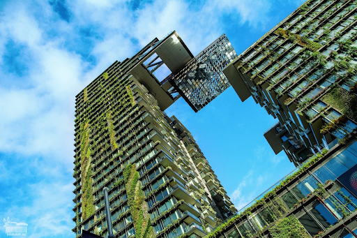
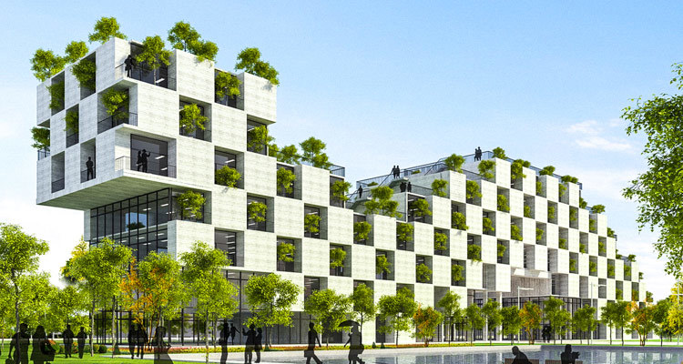
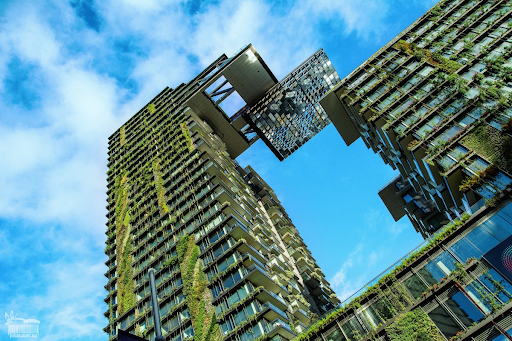
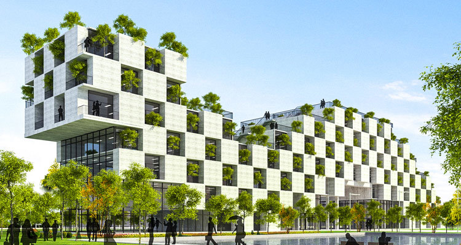
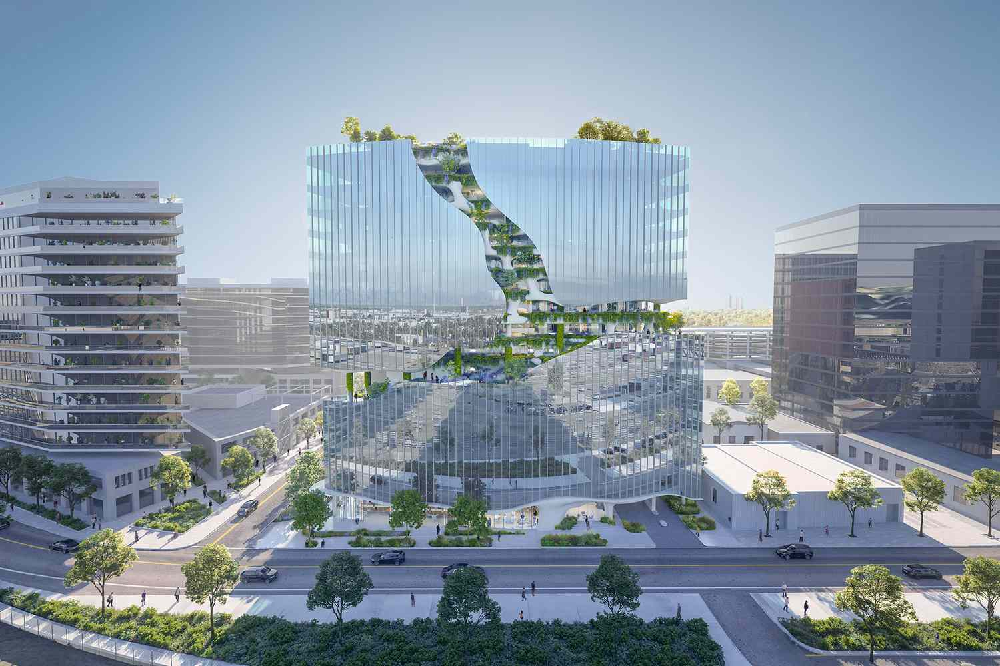
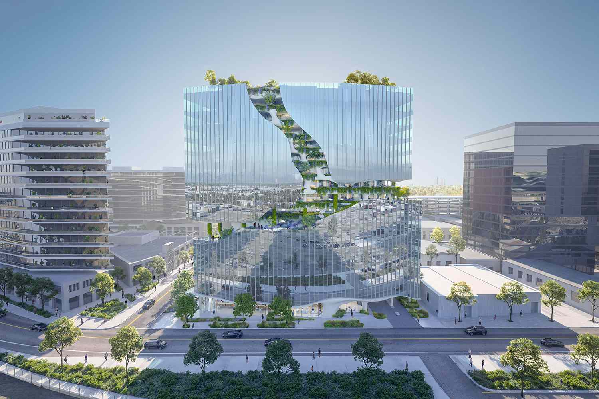
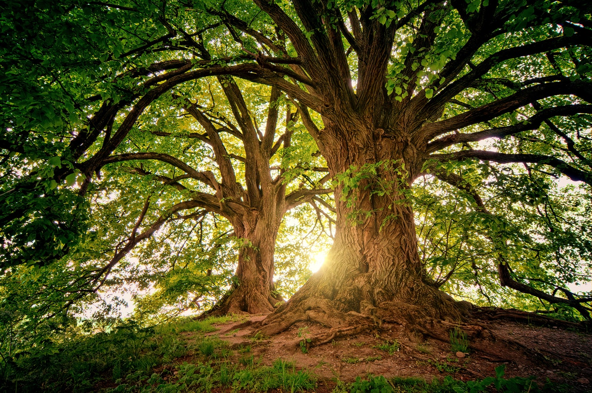

Green Buildings:
Architects and designers are increasingly incorporating sustainable design principles into
buildings to minimize energy consumption, reduce carbon emissions, and enhance
occupant comfort. Features such as passive solar design, natural ventilation,
green roofs, and energy-efficient materials are commonly used to achieve these goals.
 



 

green art desing
environment art design is a multidisciplinary field that combines artistic creativity,
technical skills, and storytelling to bring digital environments to life and immerse
audiences in captivating virtual worlds.

Garden City
Symbol of Singapore and its efforts to promote green space, these “Supertrees” belong to a
display at the 250-acre Gardens by the Bay. The high-tech structures range from 80 to 160
feet and collect solar energy to power a nightly light show. They have a softer side too:
their trunks are vertical gardens, laced with more than 150,000 living plants.

Tree natural
"Tree natural" typically refers to trees that exist in their natural habitat, unaffected by
human intervention or artificial cultivation. These trees grow in forests, woodlands, jungles,
and other natural environments, following their natural life cycles and ecological interactions with other organisms.
